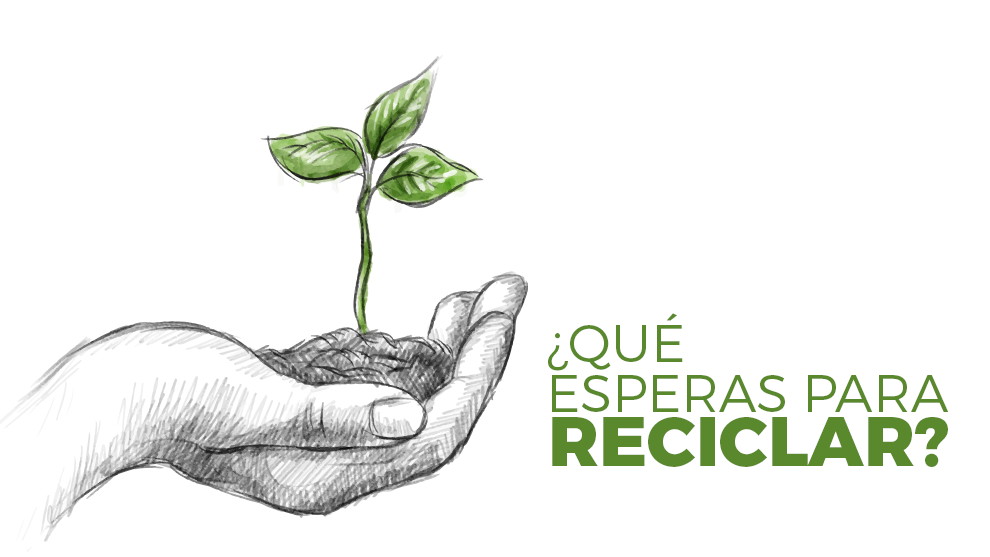
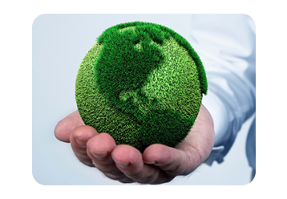

Es la acción y efecto aplicar un proceso sobre un material para que pueda volver a utilizarse. El reciclaje implica dar una nueva vida al material en cuestión, lo que ayuda a reducir el consumo de recursos y la degradación del planeta. La base del reciclaje se encuentra en la obtención de una materia prima o producto a partir de un desecho. Un bien ya utilizado puede destinarse a la basura o reciclarse y adquirir un nuevo ciclo de vida. El reciclaje contribuye a luchar contra el agotamiento de los recursos naturales y también ayuda a eliminar los desechos de forma eficaz. Al separar los residuos según sus características, es posible aprovechar algunos para el reciclaje y eliminar el resto de manera adecuada.
 